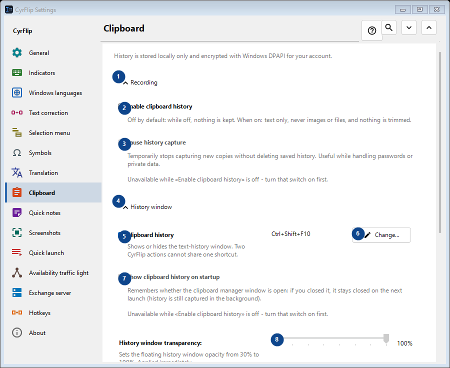
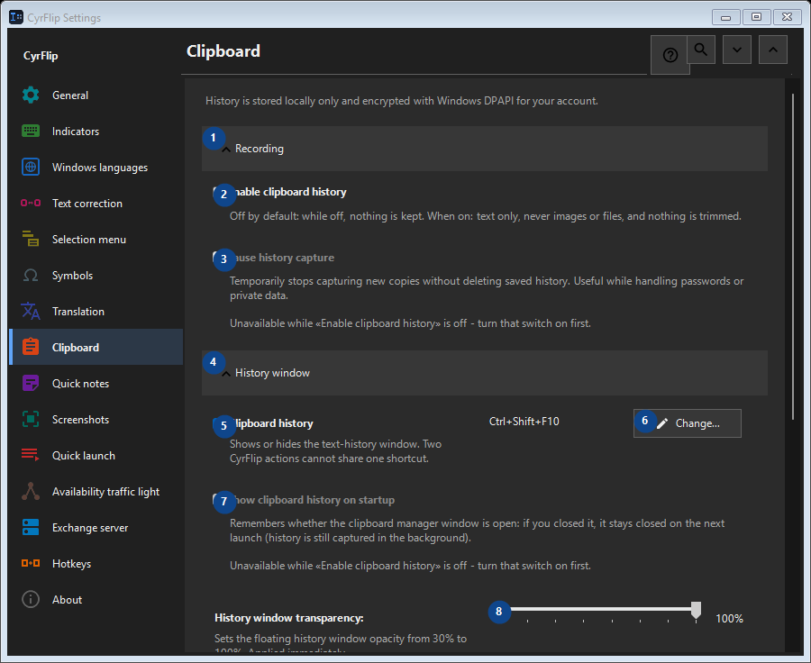

Clipboard
What this is for
History is stored locally only and encrypted with Windows DPAPI for your account.


In this order
Settings apply immediately. There is no required order; use the groups below.
The elements
1. Recording
Use this command when you need the action named above. Review any confirmation before accepting it.
Your shortcuts2. Enable clipboard history
Off by default: while off, nothing is kept. When on: text only, never images or files, and nothing is trimmed.
Your shortcuts3. Pause history capture
Unavailable while «Enable clipboard history» is off - turn that switch on first. This control is currently unavailable. Enable its feature or select an entry first.
Your shortcuts4. History window
Use this command when you need the action named above. Review any confirmation before accepting it.
Your shortcuts5. Clipboard history
Shows or hides the text-history window. Two CyrFlip actions cannot share one shortcut.
Your shortcuts6. Change - Clipboard history
Use this command when you need the action named above. Review any confirmation before accepting it.
Your shortcuts7. Show clipboard history on startup
Unavailable while «Enable clipboard history» is off - turn that switch on first. This control is currently unavailable. Enable its feature or select an entry first.
Your shortcuts8. History window transparency
Unavailable while «Enable clipboard history» is off - turn that switch on first. This control is currently unavailable. Enable its feature or select an entry first.
Your shortcuts9. Search history
Opens a separate window to search by a text fragment. Enter at least three characters to search.
Your shortcuts10. Clearing
Use this command when you need the action named above. Review any confirmation before accepting it.
Your shortcuts11. Clear all history
Deletes every entry from memory and the encrypted local file. This cannot be undone.
Your shortcuts12. Moving to another computer
Use this command when you need the action named above. Review any confirmation before accepting it.
Your shortcuts13. Export...
One open text file with your notes and the clipboard history you choose: read it in any editor or on a phone, and import it into CyrFlip on another computer. The file is not encrypted. The import shows what will be added and deletes nothing.
Your shortcuts14. Import...
Use this command when you need the action named above. Review any confirmation before accepting it.
Your shortcuts